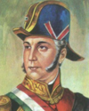
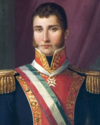

La Independencia de Mexico fue un proceso politico y militar que comenzo en 1810 con el objetivo de romper el dominio español sobre el territorio de la Nueva España.Esta lucha transformo profundamente la identidad nacional y marco el nacimiento de una republica soberana que, decadas mas tarde, tuvo que defender su recien ganada libertad frente a las ambiciones imperiales de Francia durante el siglo XIX
| Año / Fecha | Acontecimiento Historico |
|---|---|
| 1810 (16 sep) | Miguel Hidalgo lidera el Grito de Dolores, dando inicio formal a la Guerra de Independencia |
| 1811 (30 jul) | Fusilamiento y muerte de Miguel Hidalgo en Chihuahua. El movimiento insurgente continua bajo otros lideres |
| 1821 (27 sep) | El Ejercito Trigarante entra victorioso a la Ciudad de Mexico y se consuma de manera oficial la Independencia |
| 1822 (21 jul) | Inicio del periodo imperial de Agustin de Iturbide al ser coronado oficialmente como Emperador de Mexico |
| 1829 (1 abr) | Inicio de la gestion presidencial de Vicente Guerrero como el segundo presidente constitucional del pais |
| 1862 (5 may) | Comienza la Segunda Intervencion Francesa; el ejercito mexicano derrota a las tropas de Napoleon III en la Batalla de Puebla |
| 1867 (19 jun) | Fusilamiento del emperador Maximiliano de Habsburgo, consolidando el triunfo de la Republica y el fin definitivo de la invasion francesa |
|
Miguel Hidalgo |
 Ignacio Allende |
Vicente Guerrero |
Josefa Ortiz |
 Agustin de Iturbide |
Jose Maria Morelos |